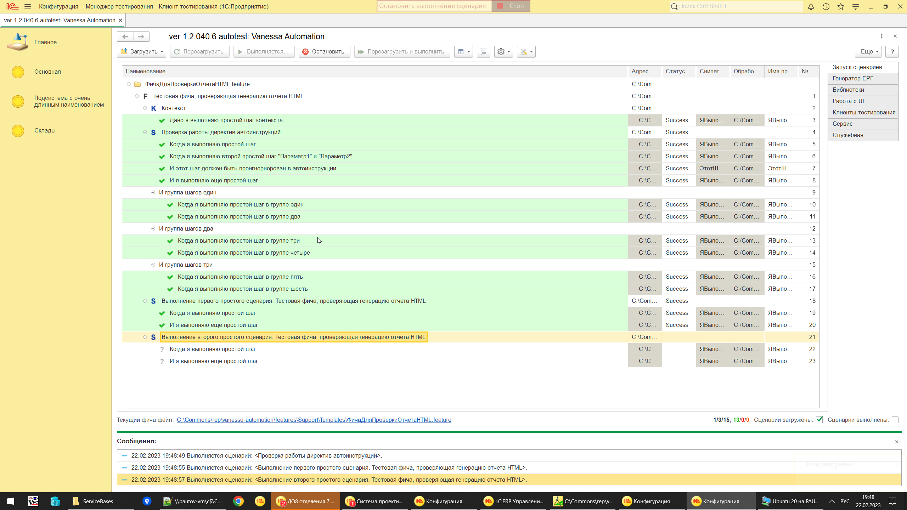
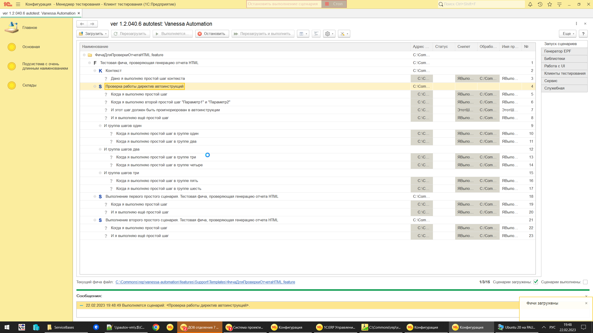

Другой текст первого шагаДругой текст второго шага Параметр2 и Параметр1И я выполняю ещё простой шагИ группа шагов одинИ группа другой текстКогда я выполняю простой шагИ я выполняю ещё простой шагКогда я выполняю простой шагИ я выполняю ещё простой шаг